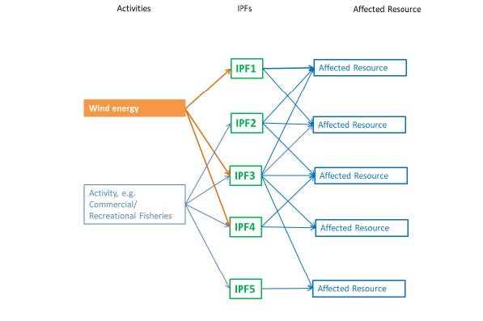
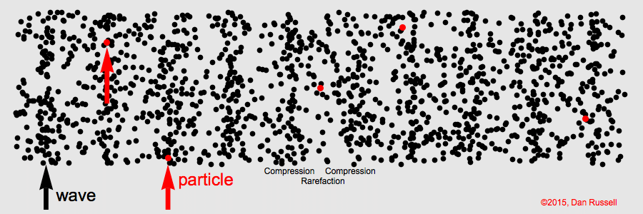
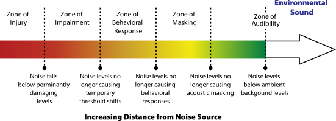

2 Impact Producing Factors
2.1 What is an Impact Producing Factor?
An action or activity, like OSW development, can result in one or more impact-producing factors (IPFs). Those IPFs illustrate how an action or activity affects relevant physical, biological, economic, or cultural resources. The effects or impacts resulting from the interaction between an IPF and a resource can be positive, negative, or neutral. Identifying multiple actions or activities and related IPFs, then, is one way to demonstrate cumulative impact on relevant resources and to assess how vulnerable those affected resources are to evaluated actions or activities.
For more information, see BOEM (2019).

In the context of the OSWVA, the IPFs are the exposure factors.
OSW development will result in 4 primary IPFs that may affect protected species. Those IPFs include:
- Noise
- Oceanographic Effects
- Vessels
- Presence of Structures
2.2 Noise
Underwater sound is generated when objects underwater vibrate causing a pressure wave to travel through the water. Underwater sound has components of both pressure and vibration that is often referred to as particle motion.

Marine mammals, and to a lesser extent sea turtles, use underwater sound for a number of purposes that include communication, navigation, social interaction, reproduction, foraging, and predator avoidance or deterrence. Acoustic disturbance from underwater sound, then, has the potential to impact marine wildlife (marine mammals and sea turtles) in a variety of ways and to varying degrees depending on the characteristics of the sound (amplitude, frequency, duration, transmission loss), the habitat, and the species. Those impacts can ultimately result in auditory injury or hearing loss, auditory masking, or behavioral changes that can be tricky to quantify.
Man-made underwater noise can disrupt the normal behavior of marine wildlife. It is common to categorize that degree of disruption into zones: (1) zone of audibility, (2) zone of masking, (3) zone of responsiveness, and (4) zones of impairment and injury.

For zones 1, 3, and 4, man-made underwater noise must be detected by the animal for a disruption to occur. For zone 2, man-made underwater noise must contribute to ambient noise in a way that reduces the ability of animals to detect sounds of interest.
All phases of OSW development will emit noise. Those phases include (1) site surveys, (2) construction, (3) operations and maintenance, and (4) decommissioning.
![Figure: Major sources of sound and vibration from OSW farms during the pre-construction (left), construction (center), and operational (right) periods (not to scale). Sounds emitted from each source are indicated with red lines. Acoustic energy put into the substrate as a result of geophysical and geotechnical surveys and the pounding of piles during construction can emanate back into the water at considerable distances from the sources themselves (Popper and Hastings, 2009; Hawkins et al., 2021). From Popper et al. (2022).](images/figure_1_Popper-et-al-2022.jpg)
Below is a brief overview of underwater noise that could be generated during each phase of OSW development, which will vary by intensity and duration.
2.2.1 Site surveys
Once a lease area is awarded, geophysical surveys are conducted to characterize site conditions and geologic constraints in support of engineering assessments. Most geophysical surveys use some type of acoustic mapping technology, such as sonar or echosounders. Site surveys will also include vessel noise.
2.2.2 Construction
Installation of foundations using impact pile-driving is one of the most significant noise-generating activities during construction. Impact pile-driving is acute, relatively short in duration, and can be heard 10s of kilometers from the sound source. Construction will also include vessel noise.
As an example, below is the sound from underwater pile-driving from 500 meters,
This is what it would sound like from more than 18 miles away (35 km) away,
Example and audio files from UMCES.
2.2.3 Operations and maintenance
Most OSW farms will have a lifespan of 20 - 30 years. Operational noises are thought to extend several kilometers before attenuating at or below ambient noise levels, although certain tonal frequencies can extend as far as 10s of kilometers. Sound source levels for operational noise of OSW farms are thought to be equivalent to a large commercial ship. Operations and maintenance will also include vessel noise.